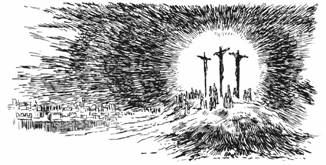
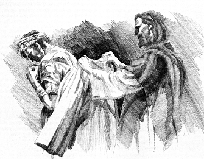

What's Right and What's Not Quite Right with the Seventh-day Adventist Fundamental Doctrines???
By Bill Diehl, editor of PTM. We are searching for persons willing to translate this material into other languages. Please email us if willing and able.

What's Right and What's Not Quite Right with the Seventh-day Adventist Fundamental Doctrines???
By Bill Diehl, editor of PTM. We are searching for persons willing to translate this material into other languages. Please email us if willing and able.
The Seventh-day Adventist movement, in its truest "Protestant" and "evangelical" expression, as God intends all Protestant churches to be, is a "restoration" of bible truth rather than an "innovation" of strange new things which our Lord and His apostles never taught. Just look at the true essence of the Adventist message that is being proclaimed to every nation, kindred, tongue, and people:
1.) Adventism affirms and proclaims the everlasting gospel of the vicarious atonement of our Lord Jesus Christ on the cross of Calvary.
John 3:14-18 14 And as Moses lifted up the serpent in the wilderness, even so must the Son of man be lifted up: 15 That whosoever believeth in him should not perish, but have eternal life. 16 For God so loved the world, that he gave his only begotten Son, that whosoever believeth in him should not perish, but have everlasting life. 17 For God sent not his Son into the world to condemn the world; but that the world through him might be saved. 18 He that believeth on him is not condemned: but he that believeth not is condemned already, because he hath not believed in the name of the only begotten Son of God. 19 And this is the condemnation, that light is come into the world, and men loved darkness rather than light, because their deeds were evil. 20 For every one that doeth evil hateth the light, neither cometh to the light, lest his deeds should be reproved. 21 But he that doeth truth cometh to the light, that his deeds may be made manifest, that they are wrought in God.
Our Lord Jesus Christ is the promised "Seed of the Woman" who has fulfilled all the righteous legal and moral demands of God's Law for us so that in Him all repentant sinners who put their faith in His blood are accounted sinless and righteous in His merciful reckoning even unto the coming of the Lord. The justification of repentant believers is by God's unmerited grace through faith in the sinless life and atoning death of Christ as revealed in the Bible.
Acts 2:36-40 "Therefore let all the house of Israel know assuredly that God has made this Jesus, whom you crucified, both Lord and Christ." 37 Now when they heard this, they were cut to the heart, and said to Peter and the rest of the apostles, "Men and brethren, what shall we do?" 38 Then Peter said to them, "Repent, and let every one of you be baptized in the name of Jesus Christ for the remission of sins; and you shall receive the gift of the Holy Spirit. 39 "For the promise is to you and to your children, and to all who are afar off, as many as the Lord our God will call." 40 And with many other words he testified and exhorted them, saying, "Be saved from this perverse generation."
From the beginning of life in Christ to the end of life in Christ, the repentant believer in Christ will always confess that he needs the covering of Christ's forgiveness and imputed righteousness. The Holy Spirit indwells all believers in Christ to empower them and help them to begin to walk in obedience to God's holy Law in sanctified holy living, but the sanctified life of even the most godly of God's people will still need to be covered by the active righteousness (His sinless life) and passive righteousness (His atoning death on the cross of Calvary) of Christ's imputed or "reckoned" righteousness even unto the Last Day when Christ comes again.
2.) Adventism affirms and proclaims the apostolic teaching that the "hour of God's judgment" has come. All the world is being called out of the kingdom of Satan, called spiritual "Babylon", and being invited to receive the seal of God's justification, forgiveness, and eternal life through faith in the atoning blood of Christ. Those repentant believers who receive the "seal of God" are filled with the Holy Spirit and will acknowledge the Law of God, the Ten Commandments, including the Sabbath of the fourth commandment, as their moral guide in sanctified holy living. The message of the "Three Angels of Revelation 14" is the same message that the apostolic church proclaimed. Adventism has been raised up in the providence of God to restore this apostolic "judgment hour" message that our Lord Jesus Christ, as our High Priest, has ascended into heaven and has entered the most holy place of the heavenly sanctuary as the one Mediator between God and Man to plead the merits of His blood for all repentant sinners who put their faith in Him. The saving message of Adventism is the same message as the early church's apostolic call to repentance towards God and faith in the atoning blood of Jesus Christ. The gift of God is the forgiveness of sin and eternal life by God's unmerited grace alone for all who believe in Christ, repent of their sins, and follow Christ alone as Savior and Lord of their life.
 3.) Adventism affirms and proclaims the "Third Use of the Law" as a moral guide for the Christian believer which is so important in this lawless diabolical age in which we live. The Holy Spirit in the new covenant promise begins to write the Law of God upon the hearts of all repentant believers who are born again through faith in Christ's blood. This impartation of the gift of the indwelling Holy Spirit is called "sanctification" and it is an ongoing growth in Christ throughout our earthly sojourn. Adventism rejects all forms of lawless antinomianism.
3.) Adventism affirms and proclaims the "Third Use of the Law" as a moral guide for the Christian believer which is so important in this lawless diabolical age in which we live. The Holy Spirit in the new covenant promise begins to write the Law of God upon the hearts of all repentant believers who are born again through faith in Christ's blood. This impartation of the gift of the indwelling Holy Spirit is called "sanctification" and it is an ongoing growth in Christ throughout our earthly sojourn. Adventism rejects all forms of lawless antinomianism.
4.) Adventism affirms and proclaims the "First Use of the Law" as a restrain upon society at large. Adventism also affirms and proclaims that the Holy Spirit employs the "Second Use of the Law" as a "schoolmaster" to continually convict us of our sinful nature and our need to be continually led to Christ to continually be forgiven and justified by faith in His sinless life and atoning death on Calvary. The believing Christian will need forgiveness and the imputed righteousness of Christ in justification until the Last Day. The believing Christian also will need the imparted enabling grace of the Holy Spirit in sanctification throughout his earthly life:
a.) at the first day of conversion of a sinner to Christ,
b.) during the entire Christian sojourn in this world,
c.) and even unto the coming of the Lord in the clouds of heaven.
This side of eternity, the forgiveness of sin, the imputed righteousness of Christ, and justification by faith in the blood of Christ will always be necessary for the believing people of God.
 5.) Adventism affirms and proclaims that God truly calls and invites all the world to come to Christ in repentance towards God and faith in Christ as Savior and Lord. He graciously offers forgiveness of sin and the free gift of eternal life to every nation, kindred, tongue and people. God has not predetermined or predestined who will be saved or lost. Christ's sinless life and atoning blood can cover any repentant sinner who calls upon His name. Hyper-Calvinism, Double Predestination, the Augustinian teaching of "limited" atonement and "irresistible" grace for a predetermined elected number of people are rejected as unscriptural. The Holy Spirit attends the proclamation of the gospel and invites all to come to Christ, but His call to repentance and His invitation to salvation are resistible.
5.) Adventism affirms and proclaims that God truly calls and invites all the world to come to Christ in repentance towards God and faith in Christ as Savior and Lord. He graciously offers forgiveness of sin and the free gift of eternal life to every nation, kindred, tongue and people. God has not predetermined or predestined who will be saved or lost. Christ's sinless life and atoning blood can cover any repentant sinner who calls upon His name. Hyper-Calvinism, Double Predestination, the Augustinian teaching of "limited" atonement and "irresistible" grace for a predetermined elected number of people are rejected as unscriptural. The Holy Spirit attends the proclamation of the gospel and invites all to come to Christ, but His call to repentance and His invitation to salvation are resistible.
6.) Adventism affirms and proclaims the glorious truth of the resurrection of the dead at the Second Coming of Christ as the blessed hope of the believer. The Grecian view of an "immortal soul" which lives on eternally after death is unscriptural. All attempts to contact the dead are forbidden as Satanic and unscriptural.
7.) Adventism affirms and proclaims the virgin birth of our Lord Jesus Christ and His unique incarnation as fully God and fully man. God the Father, God the Son, and God the Holy Spirit are revealed to us in God's word as the triune eternal God of the bible. The Lord Jesus Christ is the One through whom God has created, sustains, and redeemed the world. Arianism and Semi-Arianism are rejected as being false heretical views on the nature of Christ.
8.) Adventism affirms and proclaims the harmony yet distinction of the Law and the Gospel. This harmony yet distinction is a necessary bulwark against the prevailing error of antinomian Dispensationalism which is sweeping through the evangelical Christian world today and foolishly focusing on the Zionist events in the middle east, a rebuilding of the Levitical temple, and a "secrete rapture" of the church. Darbyism is rejected as unscriptural.
9.) Adventism affirms and proclaims the seventh day Sabbath of the fourth commandment of the Decalogue as a memorial to Christ's having created the universe approximately 6,000 years ago in six literal days. The Sabbath is God's emphatic "No!!" to the abomination of Darwinian evolutionism. Sunday sacredness is rejected as unscriptural.
10.) Adventism affirms and proclaims the Biblical truth of the literal fall of Adam and Eve in the Garden of Eden as the origin of sin and suffering and death. This truth is denied by all forms of Darwinism including so-called "theistic" evolution and "progressive creationism".
11.) Adventism affirms and proclaims the existence of a real fallen angel named Lucifer who became Satan along with one third of the angelic host. Satan tempted Eve to believe that she was immortal and that she could ignore the divine warning against eating the forbidden fruit of the tree of knowledge of good and evil. Adam joined Eve in her sin and rebellion and thus they were cast out of Eden. Sin and suffering and death thus came upon the world and the entire human family. However the Lord's plan of forgiveness, redemption and salvation through the promised Seed of the woman was revealed to them and to all the world through repentance towards God and faith in the atoning blood of the Savior, Jesus Christ.
Just before the very end of the world, Satan, the deceiver, himself will be permitted to visibly appear and deceptively announce and claim to all the world that he is the true creator, savior, and god of the world. Just as he deceived Eve in the garden of Eden, he will claim that humanity is naturally immortal and that the "immortal soul" of man can never die. Also as the "Lawless One" he will claim that he alone has the authority to determine what is good and what is evil. He will claim to have changed the seventh day Sabbath of the fourth commandment of the holy Law of God. He will demand that all the world must bow down to him and worship him by recognizing Sunday, the first day of the week, as the day to honor him as the creator and savior of the world. In this final world-wide crisis and testing time, this over-powering deception if possible would deceive even God's elect. At this time, in spite of world-wide persecution and threat of death, those bible-believing Christians who keep the true Ten Commandments of God and who trust in the atoning blood of Christ will not be deceived by Satan's end-time lies and deceptions.
12.) Adventism affirms and proclaims a literal world-wide flood approximately 4,000 years ago which destroyed the lawless unbelieving antediluvian world and the saving of Noah and his family by God's unmerited grace. The "local flood" teaching is rejected as unscriptural.
13.) Adventism affirms and proclaims the message of repentance towards God and faith in the Lord Jesus Christ. Thus this message is a warning and a witness that God is about to destroy all the unbelieving world and that all who refuse to repent, believe the gospel of Christ, and allow Christ to begin write His Law upon their hearts through the indwelling Holy Spirit, will be lost eternally.
14.) Adventism affirms and proclaims that God will punish and then totally and eternally annihilate sin, Satan, and all unrepentant sinners at the end of the millennium at the final executive judgment rather than punish sinners in an eternally burning hell-fire in unending pain and suffering throughout eternity. Eternally burning hell-fire and unending suffering of the lost is rejected as unscriptural.
 15.) Adventism as a true child of the Reformation affirms and proclaims that the papacy is the anti-Christ beast of Revelation 13 and that the truth of the gospel is an ongoing rebuke to the abominable errors of Roman Catholicism — the intercession of the saints and Mary, transubstantiation, purgatory, priestly absolution, celibacy of the clergy, infant baptism, eternal suffering of the lost in hell-fire, Sunday sacredness, the immortality of the soul, and most deceptively—the false teaching that the good works of believers and the "Saints" are acceptable before God without the need of the merit of Christ's sinless life being imputed and reckoned to these works.
15.) Adventism as a true child of the Reformation affirms and proclaims that the papacy is the anti-Christ beast of Revelation 13 and that the truth of the gospel is an ongoing rebuke to the abominable errors of Roman Catholicism — the intercession of the saints and Mary, transubstantiation, purgatory, priestly absolution, celibacy of the clergy, infant baptism, eternal suffering of the lost in hell-fire, Sunday sacredness, the immortality of the soul, and most deceptively—the false teaching that the good works of believers and the "Saints" are acceptable before God without the need of the merit of Christ's sinless life being imputed and reckoned to these works.
16.) Adventism affirms and proclaims the non-immortality of the soul and thus is a rebuke to modern day Spiritualism which seeks to contact and communicate with the dead. The bible teaches that death is a "sleep" until the resurrection of the body.
17.) Adventism affirms and proclaims adult baptism by immersion for all repentant sinners who put their faith in the atoning death of Christ on the cross. Infant baptism by sprinkling is rejected as unbiblical sacramentalism.
18. Adventism affirms and correctly proclaims that in the Old Testament "Day of Atonement" ceremony the goat chosen to be "sacrificed for the Lord" which was slain and whose blood was carried into the Most Holy Place of the Levitical temple foreshadowed and symbolically represented the Lord Jesus Christ and His shed blood on Calvary. His shed blood "vicariously" or substitutionally atones for the guilt and sins of God's people. The second goat called the scapegoat or Azazel goat which was not sacrificed in the ritual, but rather is led out into the wilderness to die, symbolically represents the punishment and destruction of Satan and all the unbelieving world. They atone for their own sins by being punished and destroyed outside of the New Jerusalem after the 1000 years are fulfilled.
19.) Adventism affirms and correctly proclaims that at the second coming of the Lord, He will raise from the dead all those who have called upon His name since the Fall of Adam. At the coming of the Lord, He will not touch down upon the earth, but rather the believing saints who are alive at His coming will be "caught up" together with the resurrected saints to meet the Lord in the air. The unbelievers who are alive at His coming will be destroyed by the brightness of His coming. Satan and his fallen angels will then be bound to the desolated earth for 1,000 years. During this time Christ and the saved in heaven will determine the punishment to be meted out to Satan and each of the fallen angels, and also to those unbelievers throughout history who refused to repent and call upon the name of the Lord. At the end of the 1,000 years of the Millennium, Christ and the redeemed will descend in the New Jerusalem down to the desolated earth. All of the lost throughout the ages will then be raised from the dead. Satan will deceive them again into believing that they can attack and defeat those who are within the walls of the New Jerusalem. But as they approach the holy city, fire will rain down upon them from heaven. They will all then be punished according to the measure of their lawless deeds during their lifetime and then finally be consumed. Satan himself along with his demons will be totally destroyed and annihilated forever. The earth will then be recreated in Edenic beauty as it was before the fall of Adam and the entrance of sin and death.
 20.) Adventism affirms that all of the natural-born children of Adam inherit a fallen sinful nature with inherited propensities to sin and selfishness. This sinful moral and legal inheritance from Adam is called Original Sin. Christ's human nature which was conceived by the Holy Spirit and born of the virgin Mary did not inherit this fallen sinful human nature and propensity to sin. He was tempted in all points as are we, yet He was without sin or any inclination to sin.
20.) Adventism affirms that all of the natural-born children of Adam inherit a fallen sinful nature with inherited propensities to sin and selfishness. This sinful moral and legal inheritance from Adam is called Original Sin. Christ's human nature which was conceived by the Holy Spirit and born of the virgin Mary did not inherit this fallen sinful human nature and propensity to sin. He was tempted in all points as are we, yet He was without sin or any inclination to sin.
Christ's deity and divine nature as the Son of God who has always existed from all eternity, with no beginning or end, was incarnated in the person of the man, Jesus Christ. Only Christ's human nature was conceived by the Holy Spirit in the virgin Mary. The incarnate Christ was and is and will always be fully God and fully man.
21.) Adventism affirms and proclaims that the bread and wine of the Lord's Supper are symbolic of the body and blood of our Lord. The bread and wine are a remembrance of the Lord's sinless life and atoning death on the cross and proclaim the gospel of the forgiveness of sin until He comes again. Transubstantiation and Consubstantiation are rejected as unscriptural.
22.) And finally Adventism affirms and proclaims that the Bible alone is the final authority in all matters of doctrine and faith.
Questionable Adventist Distinctive Teachings
If the gospel of the justification of repentant sinners only by faith in sinless life and atoning death of Christ had been embraced whole-heartedly by the leaders of the Adventist movement, the good news about the imputed righteousness of Christ would have carried the day even unto the Last Day. As it is today, the church members are being "shaken" and shocked as they are beginning to understand that the following so-called "Adventist Doctrinal Distinctives" are immature unbiblical practices and teachings not actually taught in the Bible:
Distinctive #1. Literal foot washing before observing the Lord's Supper.
Correction: (The first century apostolic church understood that the Lord and the apostle Paul were speaking in metaphor to "wash one another's feet"— meaning to love and serve one another in humility.)
Distinctive #2. The Lord's Supper should only be practiced once every quarter.
Correction: (The first century apostolic church observed the Lord's Supper every Sabbath when they assembled for fellowship. The Lord instituted this memorial service for His church so that the believers would always be reminded that their forgiveness of sin and justification before God's throne of grace are always and only based upon the imputed righteousness of Christ's sinless life and atoning death on the cross alone and reckoned to them by faith and not based upon any merit of their sanctification and obedience.)
Distinctive #3. Mandatory tithe paying as a test of fellowship and church membership.
Correction: (Mandatory tithing was never advocated and imposed upon the Christian believers by the apostles. "Free-will" offerings were collected to meet the needs of the early church. However, those Christians who voluntarily choose to pledge to the Lord's work a tithe of 10%, or any other fixed amount, may do so as a personal choice and commitment.)
Distinctive #4. The "investigative judgment" beginning in AD.1844.
Correction: (The apostles taught that the pre-advent judgment and time of the "last days" had arrived in their day and that the entire world was being judged for eternal life or eternal death through its acceptance or rejection of Christ as Savior and Lord. The prophecies of Daniel 2, 7, 8, 9, and 10-12 were all fulfilled in the incarnation, sinless life, atoning death, resurrection, ascension into the most holy place as King and High Priest after the order of Melchesidek, and intercession of our Lord Jesus Christ in heaven. "Being justified by faith in the blood of Christ" means that the repenting sinner who continually trusts in Christ as his Savior and Lord has the forgiveness of sin, eternal life, and the justifying verdict of the final judgment.)
Distinctive #5. The antitypical Day of Atonement began in 1844.
Correction: (The antitypical Day of Atonement began at Christ's ascension and enthronement in heaven as our High Priest and King in the most holy place of the heavenly sanctuary.)
Distinctive #6. Christ entered the "first apartment" called the "Holy Place" of the heavenly sanctuary at His ascension in A.D. 31 and only entered the "second apartment" called the "Most Holy Place" of the heavenly sanctuary in the year of October 22, 1844.
Correction: (Our Lord as our great High Priest entered into the most holy place in heaven at His ascension to begin the antitypical Day of Atonement. The apostle Paul tells us in his epistle to the Hebrews that the first apartment or "holy place" of the Mosaic tabernacle symbolized the pre-Christian era of the Levitical priesthood. While the second or "most holy place" symbolizes the Christian era and the priesthood of our Lord Jesus Christ as the "high priest" of the priestly "order of Melchesidek".)
Distinctive #7. All post-apostolic era date setting like 1844 and 538-1798 can be proven from the books of Daniel and Revelation.
Correction: (The "time prophecies" of the book of Daniel were fulfilled in the 3 and 1/2 year Messianic mission of our Lord Jesus Christ. The New Testament apocalyptic symbols of the book of Revelation are symbolic metaphor for the church era. The "1260 days" in Revelation are a metaphor for the entire Christian era, not a literal "1260 years" from AD 538 to 1798. Our Lord's messianic ministry while on earth encompassed a literal 3 and 1/2 years. But the Church age for Christian believers is figuratively or symbolically represented in Revelation as the era when they would "prophesy" in the "wilderness" for a metaphorical symbolic period of "1260 days". This apocalyptic metaphor is borrowed from the literal 3 and 1/2 years that Elijah was in the wilderness fleeing from persecution of Jezebel.)
Distinctive #8. The "Three Angles Messages" of Revelation 14 began to sound in AD.1844.
Correction: (The Three Angels Messages of Revelation 14 symbolize the full proclamation of the everlasting gospel which began to be proclaimed on the day of Pentecost. The open disclosure of the "mystery of God" and hour of God's judgments upon the kingdom of Satan then began. "Babylon" was legally defeated when our Lord ratified the Everlasting Covenant with His atoning blood. The complete physical fall and destruction of Satan's kingdom will come at the final judgment of the Beast after the millennium.
But this Man, after He had offered one sacrifice for sins forever, sat down at the right hand of God, from that time waiting till His enemies are made His footstool. Hebrews 10:12-13
And the God of peace will crush Satan under your feet shortly. Romans 16:20
The "Seal of God" In Revelation 13 symbolically represents the unmerited gift of justification and the forgiveness of sin for all who repent and call upon the name of Christ. The free gift of the indwelling Holy Spirit is poured out upon all repentant sinners who flee Satan's kingdom of Babylon and embrace Christ as Savior and Lord.
In Him you also trusted, after you heard the word of truth, the gospel of your salvation; in whom also, having believed, you were sealed with the Holy Spirit of promise, who is the guarantee of our inheritance until the redemption of the purchased possession, to the praise of His glory. Ephesians 1:13-14
And do not grieve the Holy Spirit of God, by whom you were sealed for the day of redemption. Ephesians 4:30
The "Mark of the Beast" portrayed in Revelation 13 symbolically represents God's rejection of all who refuse the gospel invitation to repent and believe in Christ. Those with the "Mark" are those who willfully refuse to abandon the false religions, deceptive teachings, and blasphemous doctrines of Satan's kingdom. The final deceptive unbiblical teachings of Satan which are being exposed by the Adventist movement in the finishing up of the Protestant reformation are the satanic errors of Sunday sacredness and also the false belief in the natural immortality of the soul. The "Lawless One" will openly appear at the very end of time and will deceive the entire unbelieving world through these two diabolical false doctrines.)
Distinctive #9. The United States of America is the "lamb-like beast" of Revelation 13.
Correction: (The first "beast" with ten horns found in Revelation 13 represents pagan imperial Rome which persecuted the Christian faith prior to Rome's fall. "The lamb-like" second beast of Revelation 13 predicts the rise of the Papacy after the fall of imperial Rome. The roots of the Papal antichrist began with the false Gnostic judaising circumcision party which arose even while the apostles were alive. The apostles Paul, John, Peter, Jude, and James valiantly preached against these false ascetic Gnostic teachers who were within the church. (see the epistles of Peter, Jude, and John. See also Paul's epistles to the Romans, Colossians, Galatians, and Timothy.) These pseudo-Christian false teachers, also called "Ebionites", are those who denied 1. ) the finished substitutionary atoning blood of Christ shed on the cross for the redemption of the world, 2. ) the justification of repentant sinner by faith in Christ's shed blood alone, 3.) and Christ's eternal divinity as the Son of God. The Gnostics began to corrupt the Christian faith even as early as the apostolic era. They would eventually through the years arise to even greater ascendancy within the Christian faith during the coming centuries even until, after the fall (or deadly wound) of the pagan Roman Empire, they would emerge as the Roman Catholic "church". This false system of worship is symbolized in Revelation 13 as the "false prophet" who emerges as the papal "pontiff" of Rome who "heals" the wounded beast of imperial Rome by taking the pagan Roman gods, with their pagan demonic doctrines, and deceptively incorporating them into the doctrines of Christianity. The "image to the beast" represents the establishment of the papal Vatican in Rome with her false gospel-denying doctrines. The pope who resides and sits on the throne of the Vatican in Rome takes over the "throne of the beast" as the successor to imperial Rome which then slowly morphed into what became known as the "Holy Roman Empire" with the "pope" as its spiritual leader. These European countries after WW1 and WW2 then morphed into the European Union of today. The "number of his name" is 666 which can be adduced by counting and adding up the Roman numbers in the name "Vicarivs Filii Dei". The historicist interpretation and analysis of the books of Daniel and Revelation by the early Adventist pioneers was not quite accurate in exposition and interpretation of these symbols.)
Distinctive #10. Spiritual gifts such as the visions and dreams and biblical interpretations of Ellen White should be considered inerrant and authoritative in their level of inspiration.
Correction: (Ellen White, and the early leaders of the Adventist movement, and even James White himself never considered her writings and views to be inerrant, "authoritative", or a test of fellowship. It is a serious mistake to claim that her writings are to be considered a "continuing authority". She herself acknowledged that, prior to the year 1888, the founders and pioneers of Adventism had preached about the Law of God and the change of the Sabbath until the message had become as "dry as the hills of Gilboa" without any emphasis upon the gospel message of the forgiveness of sin, the imputed righteousness of Christ, and justification by faith in Christ's atoning blood for all repentant believing sinners. The use of the bible as the final "authority" must increase while the writings and opinions of all others must decrease.)
Distinctive #11. Total pacifism which forbids the use of deadly force to defend ourselves, our families, or our country in a just war.
Correction: (Total pacifism at all times is not taught in the New Testament. Some of our Lord's admonitions in His "Sermon on the Mount" were directed towards the rebellious people of Israel and especially the Pharisees who hated the rule of the Roman empire over their nation. And thus He directed them to passively submit to imperial Rome's rule and authority over their nation at the time of Christ. The principles of God's two great commandments to love the Lord with all our hearts and to love and treat our neighbors as we would want to be treated are to be lived out even when we find ourselves in a pagan society or under the rule of a godless government like the Roman empire indeed was. Our Lord was not teaching us that criminals and law breakers should not be prosecuted and punished by legitimate civil authorities in proportion to the seriousness of their crimes against society. Christ in the Sermon on the Mount was expanding the far-reaching outward and inward claims of God's Law upon the believer's life. However, He was not eliminating the need for, and pursuit of, legitimate social justice and equity for the individual person and society as a whole. The Christian has a God-given right and duty to defend himself and his family against personal assault, thieves, and home invasion by lawless criminals.
Distinctive #12. The clean / unclean Levitical food laws are mandatorially binding upon Christians.
Correction: (The Levitical food laws were never mandated and imposed upon Christian believers by the apostles as a test of Christian fellowship in the early church of the first century and should not be mandated as a test of fellowship in the Christian church of today. However, those who personally choose to follow the Levitical food laws or even practice vegetarianism and veganism as a personal choice should not discriminate against those who do not do so.)
Distinctive #13. Wine in the New Testament is grape juice only.
Correction: (The New Testament absolutely forbids drunkenness, but does not absolutely forbid the use of mildly alcoholic wine as a food beverage, especially when pure clean water is not generally available for drinking. Those who wish to adopt total abstinence are certainly adopting a healthful and wise lifestyle, but this choice should not be mandated as an absolute for all Christians at all times and in all places. The body of a believing Christian is truly the temple of the Holy Spirit and there is no justification for Christians to use such strongly addictive and health destroying substances such as tobacco and life-destroying street drugs such as marijuana, cocaine, and other mind-altering abominable drugs.)
Distinctive #14. No jewelry wearing for Christians.
Correction: (The Old and the New Testaments encourage simplicity and modesty in the attire of men and women, but the bible does not totally forbid the use of all jewelry.)
Distinctive #15. There is a "close of probation" for the believer in Christ before Christ comes.
Correction: (The intercession of Christ's imputed righteousness continues for the repentant believing remnant who are keeping the commandments of God and trusting in Christ's blood until Christ comes again. Probation closes only for the unbelieving lawless world which rejects the Lord's final proclamation of the gospel and His invitation to repent of their transgressions of God's Law, including the fourth commandment of the seventh day Sabbath, and call upon Him as their Savior and Lord just before the "seven last plagues" of God's wrath commences.)
Distinctive #16. There is a period of time called "the time of Jacob's trouble" just before Christ comes again when the Lord leaves the most holy place of the heavenly sanctuary and the intercession of Christ's imputed merit will no longer be available or necessary for the Christian remnant, because they supposedly have become "perfected" sinless believers and are as sinless as Adam himself before the Fall.
Correction: (Christ never stops His intercession and imputed righteousness for the repentant Christian believer who is trusting in the merits of Christ's blood. This is because the sanctified life of the commandment-keeping believer will still need the imputed righteousness of Christ's active and passive righteousness to cover him even until the Lord comes in the clouds of heaven.)
Distinctive #17. There is a "blotting out of sin" as a special or "final atonement" for the people of God which is different than the daily forgiveness of sins.
Correction: (The terms "blotting out of sin", "justification", and "forgiveness" are used interchangeably in the Bible.)
Distinctive #18. The "latter rain" is a special final second blessing and infilling of the Holy Spirit which totally restores the character of God's people to the original innocence of Adam before the Fall.
Correction: (All repentant baptized believers in Christ receive the gift of the Holy Spirit in both "former and latter rain" measure and begin the daily life-long battle with sin and begin to daily grow in holiness and sanctification until the Last Day at our Lord's second coming. Repentant believers in Christ will need the daily forgiveness of sin until the end of time. The sanctification and imparted righteousness of even the most mature believers in Christ must still be covered by the imputed righteousness of Christ. Prior to the fall of Adam, he did not need the imputed righteousness of Christ. He had neither a sinful nature nor any propensity to sin.)
Distinctive #19. Sinless perfection for the "final generation" before Christ comes.
Correction: (All true born-again Christians are seeking to walk in holiness, obedience to the holy Law of God and a sanctified life. But total sinless perfection for the Christian community comes at translation. Repentance and forgiveness are the "daily bread" of the believing Christian until "this corruptible shall put on incorruption" at the coming of Christ on the Last Day. Just as Christians, in the Lord's Prayer, are to ask the Lord for the blessing of their "daily bread", they are to also daily repent and ask for the forgiveness of their transgressions. In the same way, Christians are to be willing to forgive the sins of all other repentant sinners who knowingly commit sins against them.)
Distinctive #20. The "Last Days", the "time of the end" began in AD.1798.
Correction: (The "Last Days" and the "time of the end" began with the gospel proclamation in the apostolic era.)
Distinctive # 21. There will be a "special" group of Christians called the "144,000" who keep the Law of God perfectly and reach absolute sinless perfection prior to the second coming of our Lord .
Correction: (John's apocalypse in Revelation 7 and 14 figuratively depicts spiritual Israel in symbolic language as the "twelve tribes of Israel" and calls the Christian church the "144,000". This symbolism represents all true believers in Christ from Adam unto the final Day at the coming of Christ. All repentant sinners who trust in the merits of the Second Adam, Jesus Christ, are members of spiritual Israel, the 144,000. There are no special groups in the kingdom of God. Jesus Christ alone has provided atonement for sin and He alone is the sinless One. All repentant sinners who trust in His sinless life and atoning death are justified by God's unmerited grace alone through faith in His propitiation of sin at Calvary and have His perfection imputed and reckoned to them. The symbols of the "144,000" and the "innumerable multitude" represent the same identical group, spiritual "Israel".)
These reforms in Adventist teaching are absolutely necessary in order for a true reformation and revival of primitive godliness to take place among the advent people.
Acts 17:30 "The times of ignorance God overlooked, but now he commands all people everywhere to repent,"
Then and only then will the people of God in other folds begin to take the Seventh-day Adventist gospel proclamation seriously and join this God-ordained movement to restore the bible and "only the bible" as the rule of Christian faith.
Seventh-day Adventism is not a cult. The essence the Adventist movement is true historic Protestant Christianity. The Seventh-day Adventist movement, as God intends this reformation movement to be, is God's final warning to all who have ears to hear, to repent of their transgressions of God's holy Law and be justified and forgiven by God's unmerited grace alone though faith in the sinless life and atoning death of Christ alone as revealed in the Bible alone.
This is the true "Adventism" which our Lord Jesus Christ intended for this movement to be. Christ's purpose for providentially raising up this end-time movement was for Adventism to finish the Protestant reformation and be the foremost voice in all the world to proclaim the commandments of God and uplift the sinless, crucified, and risen Savior as the atoning sacrifice for the sins of all the world. It is time for the Seventh-day Adventist movement to finish the Protestant reformation and become all that the Lord intended this movement to be.
What do you think????
Return to the Adventist home page